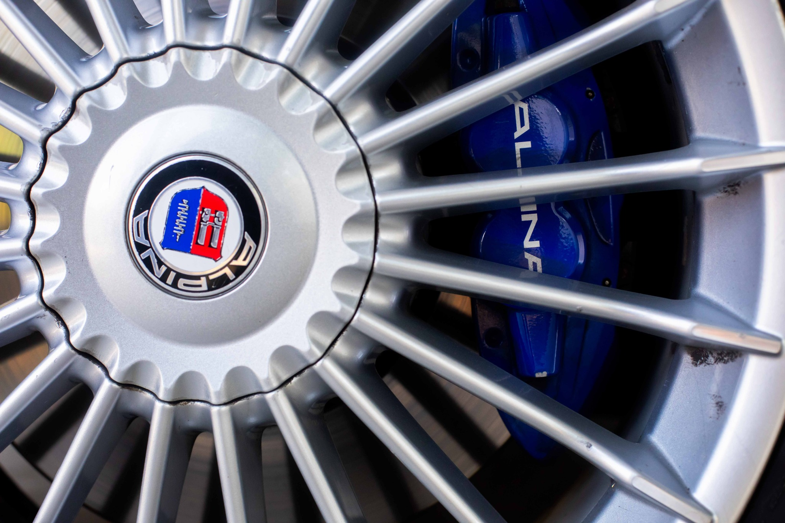
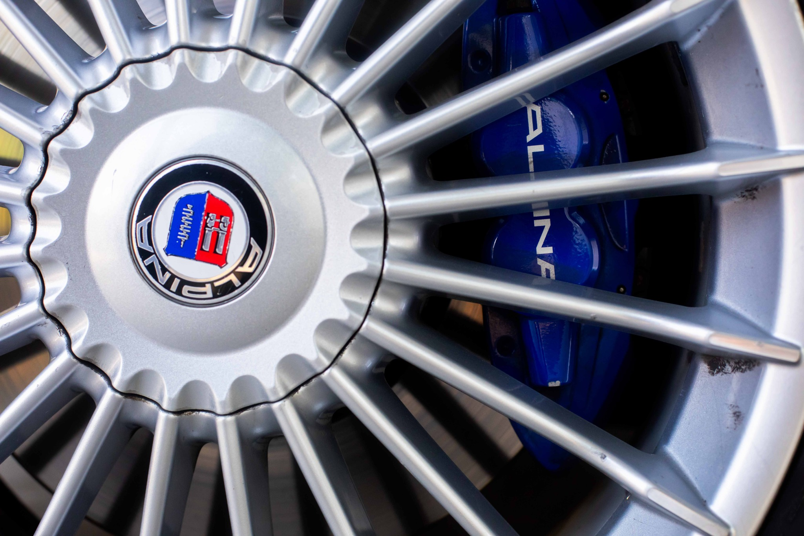

BMW Alpina B4 Biturbo
Una fusión perfecta de lujo y potencia sobre la base del BMW Serie 4
Una fusión perfecta de lujo y potencia sobre la base del BMW Serie 4
 

El BMW Alpina B4 Biturbo combina un motor 3.0L I6 con doble turbo, refinamiento de lujo y la exclusividad que caracteriza a Alpina. Con su kit aerodinámico, interiores en cuero exclusivo y rines multirradio emblemáticos, este coupé redefine lo que significa la elegancia deportiva alemana.
Equipado con frenos de alto desempeño, suspensión ajustada por Alpina y una transmisión automática de 8 velocidades con modo manual, este modelo ofrece una experiencia de manejo emocionante y refinada.